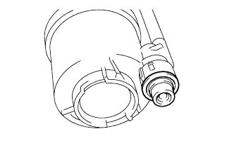
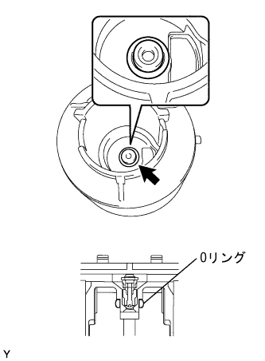
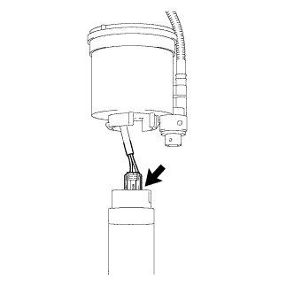
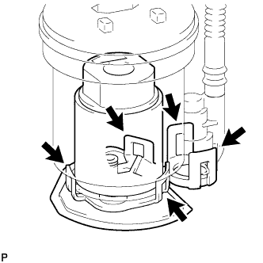
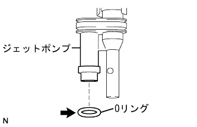
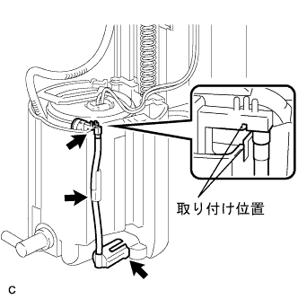
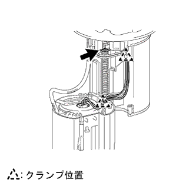
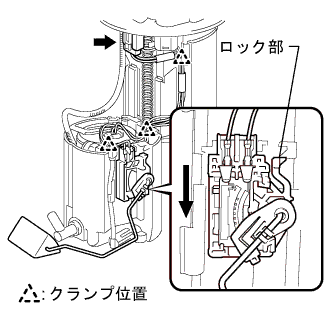

Fuel Suction Tube Assembly (with Pump & Gauge) (2AZ-FE) Reassembly |
| 1. Install Fuel Pressure Regulator Assembly |
 |
Apply gasoline to 2 new O-rings and install them to the fuel pressure regulator.
 |
Install the fuel pressure regulator to the fuel filter.
| 2. Install Fuel Pump |
 |
Apply gasoline to a new O-ring and install it to the fuel filter.
 |
Connect the fuel pump harness connector.
 |
Engage the 5 claws of the filter and install the fuel pump.
| 3. Install Fuel Suction Support NO.1 |
 |
Install the fuel suction support No.1.
| 4. Install Fuel Pump Assembly w/ Filter |
 |
Apply gasoline to a new O-ring and install it to the jet pump.
 |
Check the positions of the 2 claws of the fuel sub-tank, engage the fuel suction support, and install the fuel filter.
 |
Install the jet pump aligned with its installation position on the fuel sub-tank.
 |
Connect the fuel pump harness connector.
Connect the 2 harness clamps.
| 5. Install Fuel Sender Gauge Assembly |
 |
Slide the fuel sender gauge to install it.
Connect the 3 harness clamps.
Install the 2 harness protectors to the wire harness.
Connect the fuel sender gauge connector.